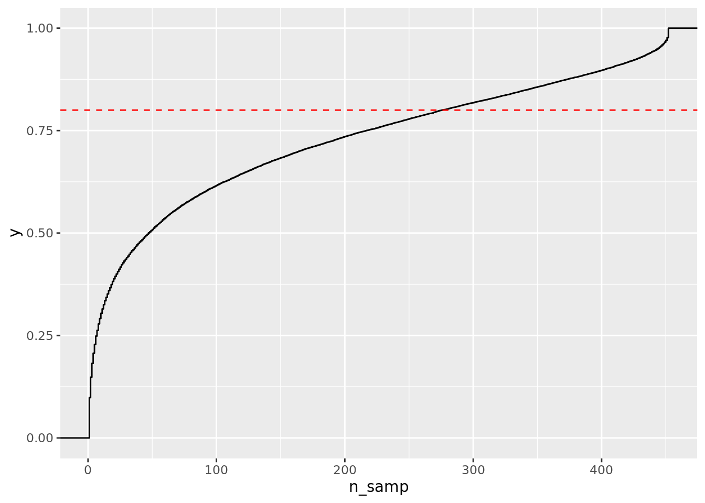
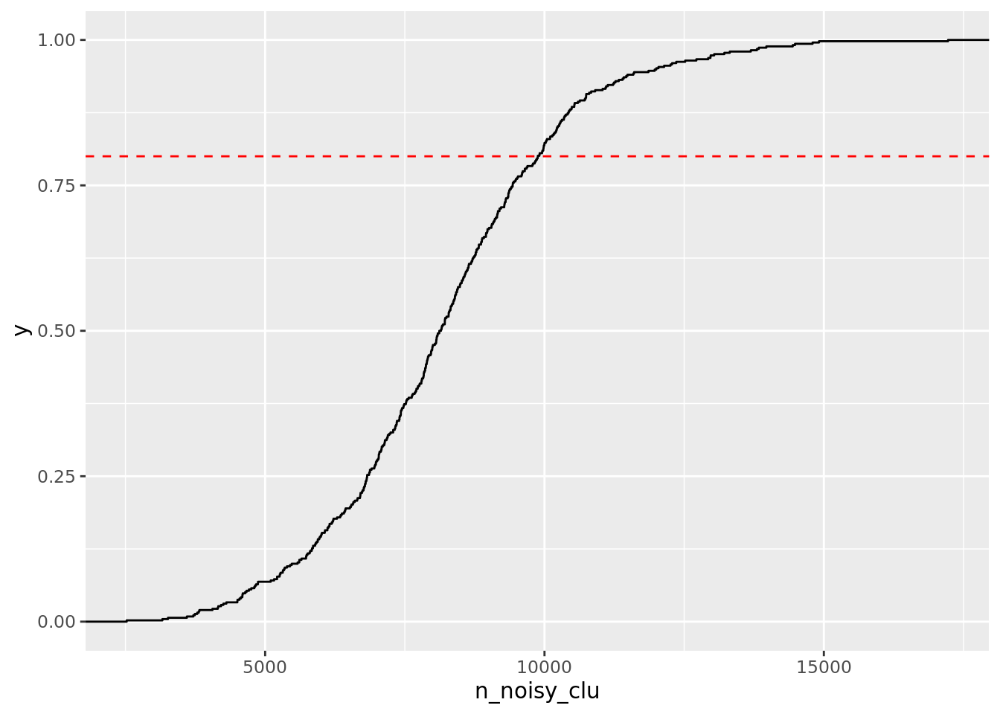
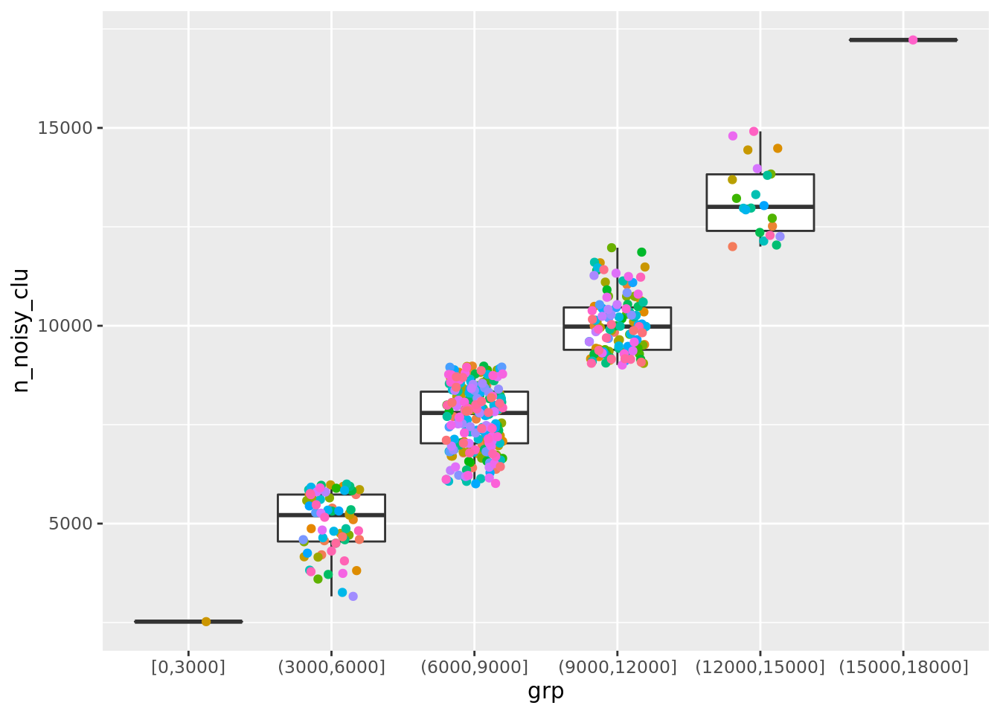

Code
noisy = fread('../code/results/Geuvadis/noise/Geuvadis_perind.counts.noise.gz')
#noisy_intr = fread('../code/results/Geuvadis/noise/Geuvadis_perind.counts.noise_by_intron.gz')The {out}_perind.counts.noise.gz noise count file has these main features:
Effectively, it indicates for each cluster the number of reads attributed to noisy splicing (by sample)
split_chrom = function(chrom_v) {
chrom_v = str_split(chrom_v, ":") %>%
map(~ list(chrom = .x[1],
start = .x[2],
end = .x[3],
strand = str_extract(.x[4], "[\\+\\-]"),
clu = str_extract(.x[4], "clu_[0-9]+"),
noisy = str_detect(.x[4], "\\*")
)) %>%
map(as.data.table) %>%
rbindlist()
return(chrom_v) # data.table
}noisy2 = noisy[, c(split_chrom(chrom), .SD), .SDcols = patterns("^ERR")] %>%
melt(measure.vars = patterns("^ERR.+"),
variable.name = "samp",
value.name = "frac"
) %>%
.[, `:=`(
num = str_split(frac, "/", simplify = T)[, 1] %>% as.integer,
denom = str_split(frac, "/", simplify = T)[, 2] %>% as.integer
)]
noisy2[, frac := num/denom]Number of clusters having legit noisy introns 29690
[1] 29690Number of samples having noisy splicing?

Do some samples have more noisy splicing?
noisy2[noisy & num > 2 & denom > 30 & frac > 0 & frac < 1,] %>%
.[, .(n_noisy_clu = length(unique(clu))), by = samp] %>%
.[,
.(samp = str_split(samp, "\\.", simplify = T)[, 1],
n_noisy_clu)
] %>%
ggplot() + stat_ecdf(aes(n_noisy_clu)) +
geom_hline(yintercept = .8, color = 'red', linetype = "dashed")
noisy2[noisy & num > 2 & denom > 30 & frac > 0 & frac < 1,] %>%
.[, .(n_noisy_clu = length(unique(clu))), by = samp] %>%
.[,
.(samp = str_split(samp, "\\.", simplify = T)[, 1],
n_noisy_clu,
grp = cut_interval(n_noisy_clu, length = 3000, dig.lab = 6))
] %>%
ggplot() + geom_boxplot(aes(grp, n_noisy_clu)) +
geom_point(aes(grp, n_noisy_clu, color = samp), position = position_jitter(width = .2, height = .2)) +
theme(legend.position = "None")
min: 2522, max 17223 noisy clusters per sample.
samp n_noisy_clu
1: ERR188427 17223
2: ERR188432 14913
3: ERR188395 14798
4: ERR188063 14484
5: ERR188084 14443
---
448: ERR188190 3715
449: ERR188148 3599
450: ERR188280 3261
451: ERR188350 3161
452: ERR188079 2522